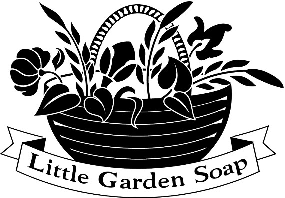

|  |
|
Hello. This is my homework page for learning HTML and CSS.
I decided to show you my hobby: soapmaking.
Please feel free to browse the Gallery and follow the links at the Contact page
or at the bottom to my shop and facebook page.
I wish you could not only look at but also smell my soap. ))
|